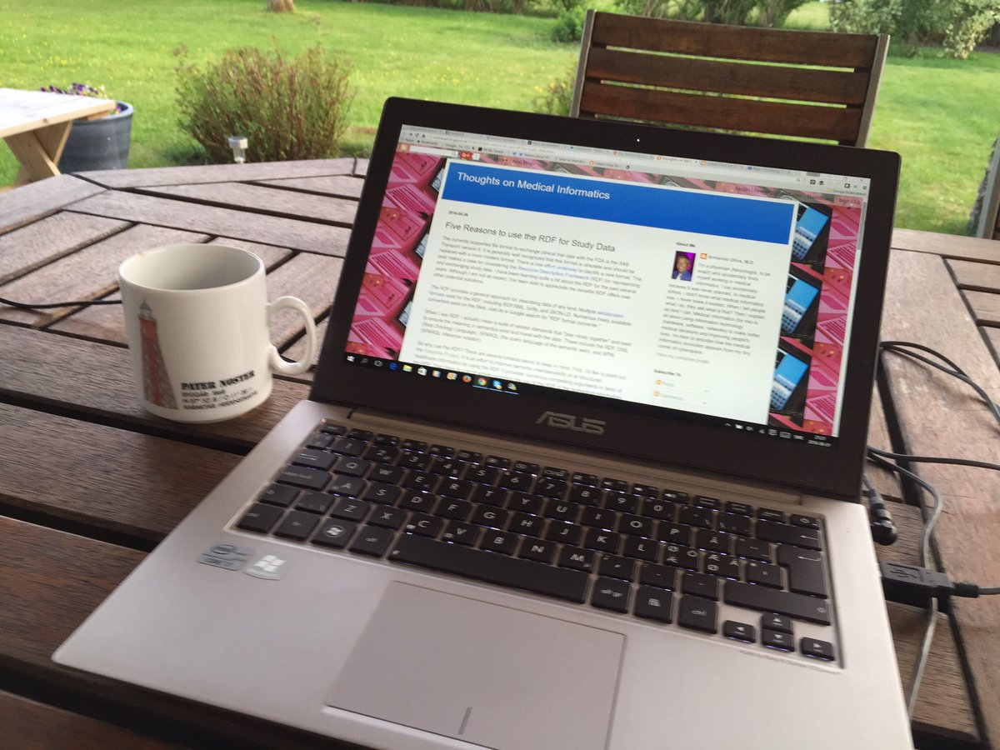

June 2016
Very nice way of following the #blockchainweb workshop (the live stream is not working well) cc: @Farzad_Frasse twitter.com/christophera/s…
Nice presentation on metadata, context and ground-context.org in @strataconf webcast oreilly.com/pub/e/3720?cmp… by @vsreekanti
.@hhtong @namedgraph @NXPdata One recent example of #Linkeddata in corps. bio-itworld.com/2016/6/10/astr… see also my blog kerfors.blogspot.se
Continued high trafic to my CDISC2RDF blog post from 2013 kerfors.blogspot.se/2013/02/cdisc2… Checkout cdisc.org/rdf from July 2015
Bookmarked: "Finding melanoma drugs through a probabilistic knowledge graph" on CiteUlike ift.tt/1OiEMKq
Good week exploring the idea of "light weight tables" enabled by "master entity URIs look-ups" using #reactjs react.rocks/tag/DataTable
RESTful API, RDF, JSON (experimental) = Excellent. May we hope for resolveable URIs and JSON-LD in the future? twitter.com/lexjansen/stat…
Interesting event "bringing together the Linked and Graph Data communities", 12 July (in the midst of my vacation) connected-data.london
Thanks. Very interesting will listen again, lots of interesting new things for me. #bitcoin twitter.com/farzad_frasse/…
Bookmarked: "Characterizing treatment pathways at scale using the OHDSI network" on CiteUlike ift.tt/1t2SWFq
New MOOC: Introduction to Systematic Review and Meta-Analysis coursera.org/learn/systemat… via @coursera incl using @cochranecollab PICO ontology
Test of annotating a clinical trial registry entry hyp.is/ZKt-4Cg1EeaGBu… using twitter.com/hypothes_is
Bookmarked: "Key factors for successful data integration in biomarker research" on CiteUlike ift.tt/1RNWpMt
Warm summer evening in the garden reading this awesome blog post by @nomini aolivamd.blogspot.se/2016/05/five-r…

"I strongly encourage those not that familiar with the RDF to learn more about it." -@nomini twitter.com/nomini/status/…